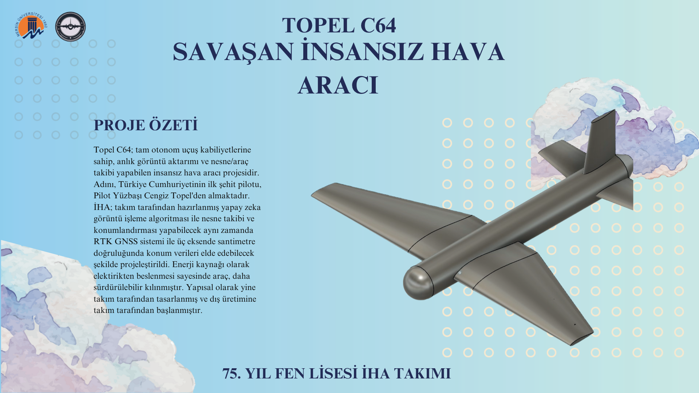
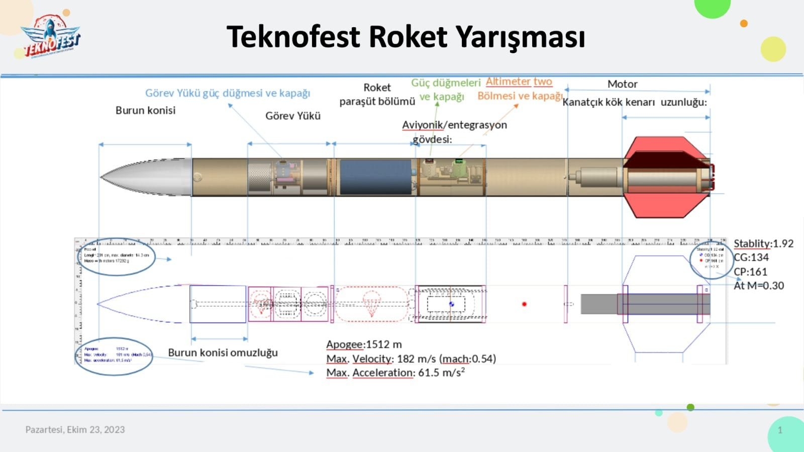
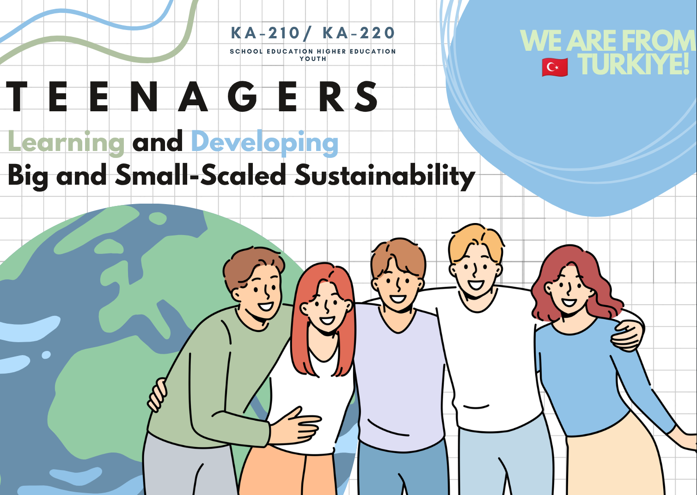

Topel C64 Savaşan IHA Projesi / ARGE Proje Pazarında
Topel C64 Savaşan IHA Projesi
2023-2024
Kurucusu ve kaptanı olduğum 75. Yıl Fen SİHA takımı ile üzerinde çalıştığımız Otonom IHA projesi. ARGE Proje Pazarı 4.lük Üniversiteler Arası Teknofest Savaşan IHA Yarışması KTR aşaması Başarılı Proje

Teknofest Roket Projesi
Teknofest Roket Projesi
2021-2024
Arkadan itişli, faydalı yük taşıması ve güvenli iniş yapabilen roket projesi.

Teenagers in the Processes of Different Scale Sustainibility
Teenagers in the Processes of Different Scale Sustainibility - Erasmus
2023-2024
Romanya ve Polonya ile yürüttüğümüz kendi yaş grubumdaki öğrencilere sürdürülebilirliğin farklı boyutlarını analtmayı ve gelecekte de devamlılığını sağlamayı amaçlayan ERASMUS projesi.
Kısa Videoların ve Teknolojik Araçların DEHB ve Dikkat Süresi ile İlişkisi
Kısa Videoların ve Teknolojik Araçların DEHB ve Dikkat Süresi ile İlişkisi
2023-2024
Kısa videoların ve teknolojik araçların DEHB ve dikkat süresi ile ilişkisi üzerine yaptığımız grup deneyinin sonuçları üzerine yazdığımız TUBİTAK psikoloji projesi. Bu deneyde 15er kişiden oluşan lise öğrencisi gruplarına 1 ay süre ile kısa video servisleri kullanımı yasaklanıp dikkat süreleri üzerinde rehberlik servisi eşliğinde testler uygulandı.
Yottalogy Mikrokontrolcü Dersleri
2 yıl önce mikrokontrolcü dersleri paylaştığım Youtube kanalı
Güneş, hava durumu, ortam şartları ve rutinlere göre aksiyon alabilen akıllı sera projesi. Üst kısmı ve güneş koruyucu filesi açılıp kapanarak bitki için en ideal koşulları sağlarken, sulama gibi rutinleri de takip edebilen projedir.
Astra Araç İçi Güvenlik Sistemi
2023
Araç içinde sürücünün farkı olmadan oluşmuş CO gibi gazları tespit ederek; sürücünün yorgunluğu, yol üzerindeki ilgisi gibi faktörleri de yapay zekâ görsel algoritması ile algılayabilecek araç içi güvenlik sistemi.
Beceriler
Dil, Kütüphane, Frameworkler ve Platformlar
Linux SysAdmin
Bash
Python
Raspberry Pi
Python
Tensorflow
HTML
CSS
C#
İletişime Geç
Akademik konular için eğitim, diğer tüm konular için proje e-postasını kullanarak iletişime geçebilirsiniz.